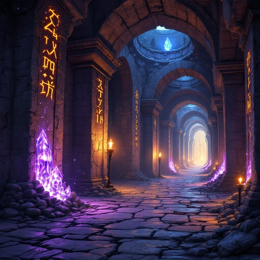

Du öffnest die massive Holztür mit dem mysteriösen Symbol. Dahinter erwartet dich ein langer, gewundener Korridor, dessen Wände mit denselben seltsamen Zeichen bedeckt sind, die du schon im Lichtraum gesehen hast. Sie scheinen zu glühen und zu pulsieren, als hätten sie ein Eigenleben.
Der Korridor führt dich tiefer in das Herz des Turms. Du spürst, wie die Luft dichter wird und das Ticken der großen Uhr lauter. Am Ende des Korridors teilt sich der Weg in zwei Richtungen: Links führt eine steile Treppe nach unten in die Dunkelheit, rechts öffnet sich eine Tür zu einem schwach beleuchteten Raum.